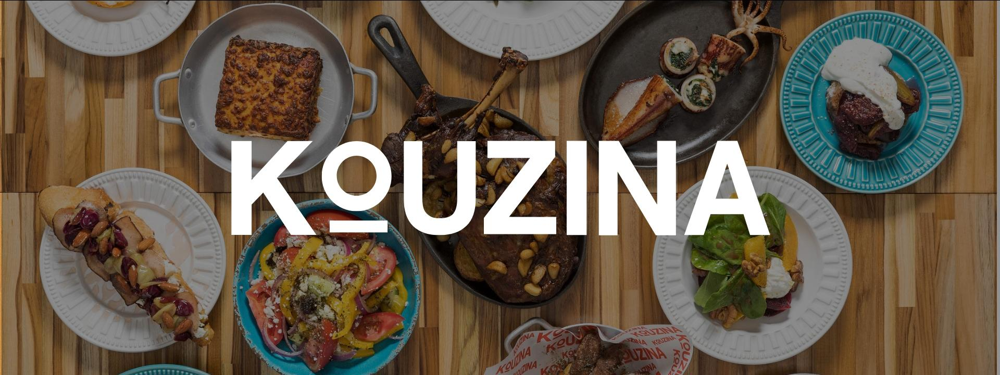
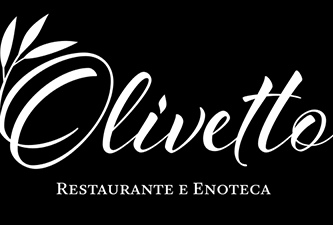
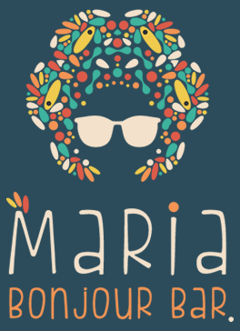

AQUI TE INDICAMOS AS EXPERIENCIAS MAIS SABOROSAS DE CAMPINAS
Quem somos
Apaixonados pela gastronomia que Campinas tem a oferecer, nós do GUIA DE SABORES seremos o seu guia definitivo para descobrir os melhores lugares para apreciar a gastronomia mundial.
Aqui, você encontrará recomendações detalhadas de restaurantes que oferecem uma verdadeira experiência culinária,
desde as tradicionais cozinhas europeias até os sabores exóticos do Japão, da Coreia e da Tailândia.
Seja você um amante dos pratos clássicos da Europa, ou um entusiasta das especiarias e técnicas únicas da culinária asiática,
nosso site foi criado para ajudar você a encontrar as melhores opções de refeições, explorando cada canto do mundo com o paladar.
Navegue por nossas seções, descubra novos destinos gastronômicos e prepare-se para uma jornada saborosa!
Eae Bateu A Fome?
Então Venha descobrir lugares para você aproveita com sua familia e amigos
Indicações
Camarada Camarão
Um restaurante especializado em frutos do mar, destacando-se pela sua culinária de inspiração nordestina e pratos à base de camarão. O ambiente é sofisticado e acolhedor, com uma decoração que remete às tradições brasileiras, especialmente do Nordeste. O cardápio é variado, oferecendo desde entradas leves até pratos principais mais elaborados, acompanhados por uma seleção de vinhos e bebidas. É uma opção popular para refeições em família, encontros de amigos e celebrações especiais.
Thanks Burger
Uma hamburgueria conhecida por seus hambúrgueres artesanais, preparados com ingredientes frescos e de alta qualidade. O ambiente é descontraído e moderno, proporcionando uma experiência casual e acolhedora para os clientes. O cardápio oferece uma variedade de opções de hambúrgueres, incluindo versões clássicas e combinações exclusivas, além de acompanhamentos como batatas fritas e milkshakes. É um lugar popular entre os amantes de hambúrgueres que buscam uma refeição saborosa em um local descolado.

Kouzina
Um restaurante que celebra a culinária grega, oferecendo pratos autênticos que capturam os sabores e tradições da Grécia. O ambiente é moderno e elegante, com toques que remetem ao Mediterrâneo, criando uma atmosfera agradável e convidativa. No cardápio, destacam-se pratos como moussaka, gyros, saladas gregas, e uma variedade de opções à base de frutos do mar, além de sobremesas típicas, como o baklava. É uma excelente opção para quem busca uma experiência gastronômica diferenciada, com pratos frescos e sabores ricos, em um cenário que evoca o melhor da Grécia.
Lagundri
Para quem pensou em comida asiatica, essa é para você. Ela se destaca pela sua culinária asiática contemporânea, com forte influência da gastronomia tailandesa e de outras regiões do Sudeste Asiático. O ambiente é sofisticado e exótico, com uma decoração que transporta os clientes para um clima oriental, ideal para uma experiência gastronômica imersiva. O cardápio oferece uma variedade de pratos que combinam sabores intensos e ingredientes frescos, como curries, pad thai, e pratos com frutos do mar, todos preparados com um toque moderno e criativo. É um destino popular para quem aprecia uma culinária asiática autêntica e inovadora em um ambiente elegante.
Mãe Terra
m espaço dedicado à culinária saudável, focado em pratos vegetarianos e veganos, com ênfase em ingredientes orgânicos e naturais. O ambiente é acolhedor e rústico, refletindo a filosofia do restaurante de promover uma alimentação consciente e equilibrada. O cardápio oferece uma variedade de opções nutritivas, desde saladas frescas até pratos principais elaborados com grãos, legumes, e proteínas vegetais. É uma escolha popular entre aqueles que buscam uma alimentação saudável, sustentável, e saborosa, em um local tranquilo e amigável.

Olivetto
Um restaurante conhecido por sua cozinha contemporânea de alta gastronomia, com uma forte influência da culinária italiana. O ambiente é sofisticado e elegante, ideal para ocasiões especiais e jantares requintados. O cardápio é diversificado, oferecendo pratos elaborados com ingredientes frescos e de alta qualidade, como massas artesanais, risotos, carnes nobres e frutos do mar, sempre com uma apresentação impecável. A carta de vinhos é extensa, complementando a experiência gastronômica. O Olivetto é um destino renomado para quem busca uma experiência culinária refinada em Campinas.
Prime Italian
Um restaurante que se destaca pela sua cozinha italiana, oferecendo uma experiência gastronômica sofisticada e autêntica. O ambiente é elegante e acolhedor, ideal para jantares a dois, encontros com amigos ou celebrações especiais. O cardápio inclui uma variedade de pratos clássicos italianos, como massas frescas, risotos, pizzas gourmet e carnes, todos preparados com ingredientes de alta qualidade. A carta de vinhos é cuidadosamente selecionada para harmonizar com os pratos oferecidos. O Prime Italian é uma escolha popular entre os apreciadores da culinária italiana em Campinas, combinando tradição e requinte..
Kaizen Japanese Food
Um restaurante especializado em culinária japonesa, conhecido pela alta qualidade e frescor de seus pratos. O ambiente é moderno e elegante, proporcionando uma experiência gastronômica autêntica e sofisticada. O cardápio oferece uma ampla variedade de opções, incluindo sushis, sashimis, tempurás, e outros pratos tradicionais japoneses, todos preparados com cuidado e atenção aos detalhes. Além disso, o Kaizen é elogiado pelo atendimento atencioso e pela apresentação impecável dos pratos. É um destino popular para os amantes da culinária japonesa que buscam uma refeição refinada e saborosa em Campinas.
Casa Peruana
Um restaurante especializado na autêntica culinária peruana, trazendo os sabores vibrantes e tradicionais do Peru para a região. O ambiente é acolhedor e culturalmente inspirado, com uma decoração que remete às cores e à cultura peruana. O cardápio oferece uma variedade de pratos típicos, como ceviche, lomo saltado, ají de gallina, e outros pratos que combinam ingredientes frescos e técnicas tradicionais peruanas. A Casa Peruana é um destino popular entre os apreciadores da gastronomia latino-americana que buscam uma experiência culinária única e autêntica em Campinas.

Maria Bonjour
Uma cervejaria localizada em Campinas, conhecida por suas cervejas artesanais e estilo acolhedor. Lá é oferecido uma variedade de cervejas artesanais, incluindo opções como IPAs, stouts e lagers. Elas se destacam pela qualidade e pelo cuidado na produção, utilizando ingredientes selecionados.